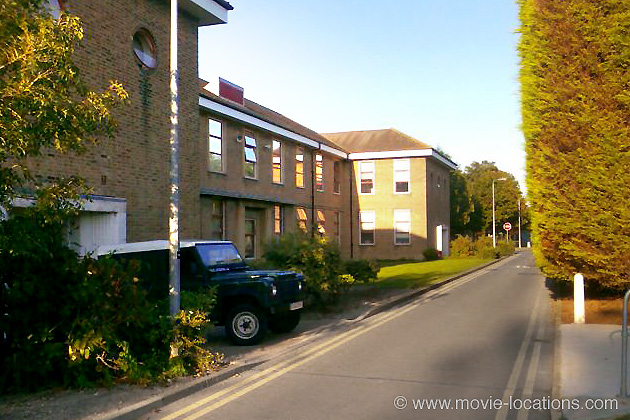
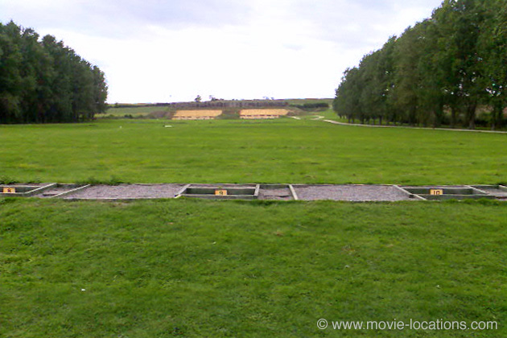

Full Metal Jacket
Main Content

Stanley Kubrick’s strange Vietnam movie, feels like two films in one, and looks like no other, without foliage or rolling green hills, but the bombed out ruins of a far eastern city.

The first half, the training sequence on 'Marine Corps Recruit Depot Parris Island, South Carolina', was filmed at PEA Bassingbourn Barracks, Bassingbourn, north of Royston on the A505 between Cambridge and Letchworth in Cambridgeshire. The barracks were established in 1970 on the site of the former RAF Bassingbourn airfield. Bassingbourn, originally an RAF station, became a bomber airfield of the Eighth Air Force, of the United States Army Air Forces during WWII. It remains the home of the Tower Museum Bassingbourn, housed in the original pre-war air traffic control tower.
It was from Bassingbourn that the B17 Flying Fortress known as 'Memphis Belle', flew on bombing raids in 1942-3. When Hollywood director William Wyler came to Bassingbourn, he made the documentary Memphis Belle which, it's claimed, helped keep America in the war.
The 1990 fictionalised version, Memphis Belle – which coincidentally also starred Matthew Modine – was filmed at RAF Binbrook in Lincolnshire, which had recently vacated by the air force.
The bombed-out city of 'Hue' in 'Vietnam' was famously filmed in the vast abandoned gasworks at Beckton, on the north bank of the Thames just to the northeast of what is now London City Airport. The industrial site was dressed as the Far East by designer Anton Furst (the man who designed the brilliant Gotham City for Tim Burton’s 1989 Batman) and planted with (inevitably wilting) palm trees.
The old industrial site was also used for the Japanese internment camp in Steven Spielberg's film of JG Ballard's Empire Of The Sun, for the horrible opening sequence of 1981 Bond movie For Your Eyes Only, and for the WWI battlefields of 1986's spoofy Biggles. The gasworks has now gone and the area has been mostly redeveloped.
The delta helicopter scenes were filmed, not on the 'Mekong River', but above the Norfolk Broads, a network of rivers and lakes extending into the county of Suffolk, known locally as broads, which was originally formed when rising sea levels flooded Medieval peat excavations. The Broads remain a popular boating holiday destination.
Visit Info
Visit The Film Locations
UK | London
Flights: Heathrow Airport; Gatwick Airport
Visit: London
Travelling: Transport For London
UK | Cambridgeshire
Visit: Cambridgeshire
UK | Norfolk
Visit: Norfolk
Visit: the Broads